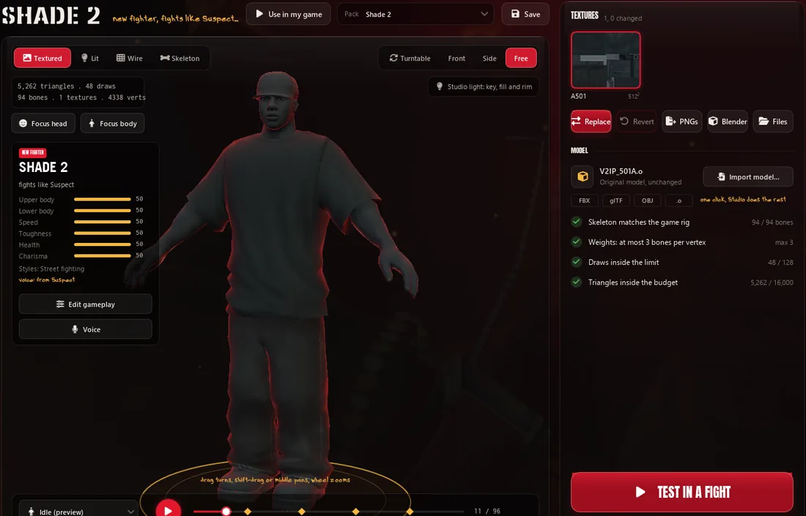

Fighters
Import your own fighters
Drop in a .glb, .fbx or Blender model and Studio rigs it onto the game's skeleton for you. The new rig editor lets you move joints, paint weights and rig every finger on its own.